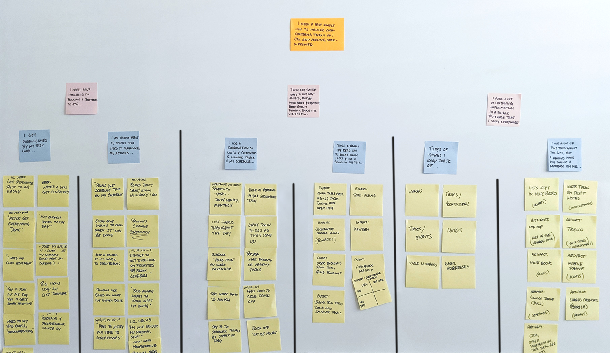
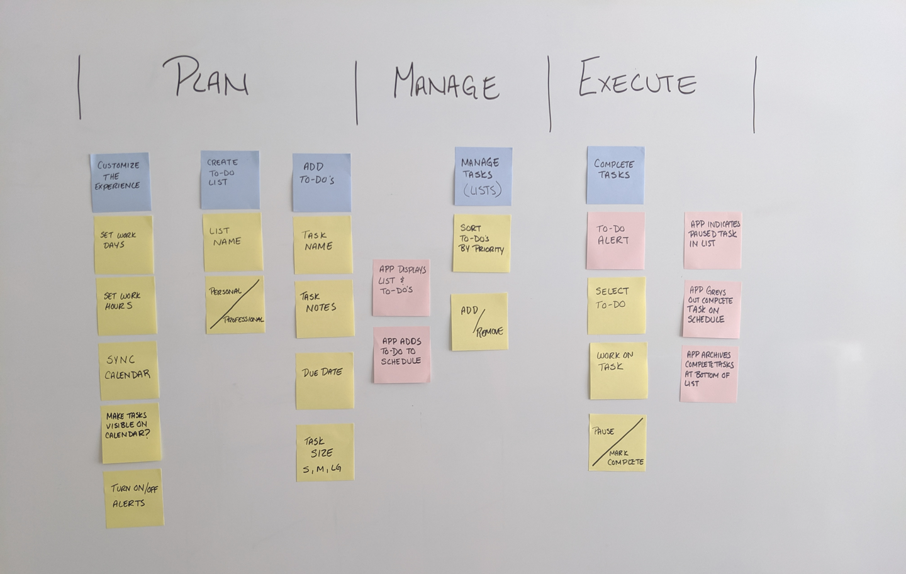
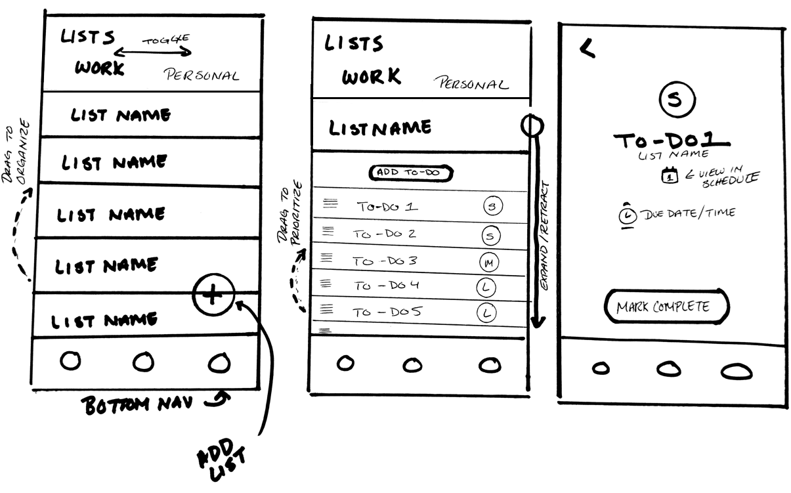
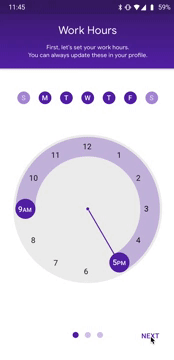
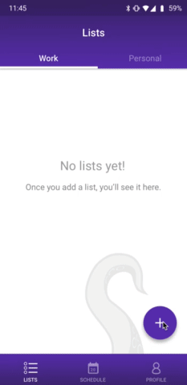
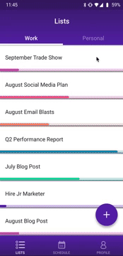
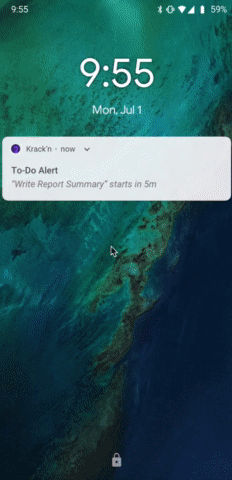

My challenge was to create a task management solution that helped users achieve a balanced schedule by optimizing their to-do lists.
Though there are hundreds of task managers out in the market, most are geared towards either professional project management or are little more than digital checklists. These can be cumbersome to use and fail to account for the fact that life is multifaceted. More often than not, users download these apps and quickly abandon them.
over a period fof four weeks, I analyzed the the task management activities of 5 users aged 24-50 who worked in an environment of constantly shifting priorities. I discovered that in every case, they used a combination of paper lists and google calendars to manage their to-do’s. I gained a number of insights from my observations and created an affinity map to discover common themes and patterns.
Keeping lists in notebooks alongside other notes and information gets cluttered. The more that is added, the harder it is to sift through.
Lists and schedules don’t always account for each other. You can have an infinite number of to-do’s, but there are a finite number of hours in a day. Meetings, calls, personal commitments, etc. shrink those available hours. When users end the day or week with tasks undone, it can feel like a failure.
While it feels gratifying to cross off to-do’s, lists tend to grow indefinitely and as anyone who has ever tried to get to inbox zero knows, we tend to sacrifice life balance in the futile pursuit of getting everything “done.” This feeling is only exacerbated when our productivity is under scrutiny by supervisors.
There was a consistent pattern of stress and feelings of being overwhelmed amongst the users, particularly the women. One common phrase I heard was "I need my own assistant." These comments generally came up when combing through their to-do lists and trying to plan out their day or week.
Through my interviews, I found that the women struggled more with the pressure to “handle everything” in both their professional and personal lives, especially when they had families to care for. The men I spoke to tended to delegate their personal concerns to their significant others to manage. So, I focused my primary user persona on millennial working mothers who are building their careers.
Based on the results of my research, it looked like my users needed some sort of personal assistant close at hand that would actively help them "keep-it-together." I decided a mobile app that could organize, prioritize, and schedule to-do’s would help bring sanity to their overloaded lives.
Now it was time to design a solution. In addition to my user behavior observations, I researched advice from time-management experts and life coaches regarding task-management best practices. Overall, their consistent guidance was to break goals down into small tasks with deadlines, sort by priority, schedule time to complete them, and celebrate wins.
I broke out a three-step process that covered the areas of greatest frustration for my primary persona: planning to-do's, managing them, and executing on them.
Then I sketched a number of different ideas, some of which can be seen below, and worked with others to vote elements in and out until we had a refined concept.
The idea that seemed to solve both the practical and emotional challenges of the user was a mobile app that could allow users to quickly create and manage their to-do lists, then automatically schedule time for tasks to be completed based on their calendar availability and the urgency of the task.
There were a number of features I considered including in the app, such as a metrics screen, task timer, and task completion log. However, I determined that these were unnecessary to validate the main hypothesis that an automated to-do scheduler would alleviate the primary complaints of users. So, they were pushed back until further research could validate their inclusion.
I created a few quick prototypes using Sketch to represent key interactions and mapped out the structure and flow of the application.
Let’s imagine that we‘re putting together a trade show for work. In addition to our workload, we've got previously scheduled meetings. We also have a work day that starts at 9am and concludes at 5pm. I’ll use this example scenario to take you through the app prototype in more detail below.
After logging in for the first time in, the app takes you on a nickel tour to give you an idea of what to expect.
The app then transitions to a guided tour so you can set the preferences it needs to organize your to-do's. You'll set your work hours, sync your calendars, and set notification preferences.
After on-boarding, you are taken to the page where all of your lists will be displayed. A "+" button triggers the creation of a new list. let's say you name your list "September Trade Show" and tag it under the "work" category. This tells the app to schedule this list's items only during your set work hours.
In the gif below, you can see what it would look like if you had multiple lists, each with color-coded progress bars.
Tapping the list name expands your to-do list and reveals the to-do "+" button. As you add to-do's, the app asks you to size it by how long you think it will take you to complete and gives you the option to add a deadline. This allows the app to determine when to schedule your to-do. Higher priority is given to tasks with closer deadlines.
You know you'll need to have promo items at your booth, which shouldn't take long, but needs to be done soon. So you make a small to-do item to place the order by the third of the month.
When it's time to start a to-do, your phone will send you a notification which takes you to your schedule. Here, tasks are displayed in a scrolling planner alongside existing events synched from your personal calendar account.
Here, you can see that it's time to work on a report summary. Opening a task allows you to edit the details, mark it complete, or hit snooze to push it to a later time. As tasks are completed, they become faded on the schedule and crossed off your to-do lists
Once the prototype was built, I tested it on five people. I put together a test scenario, similar to the one above, and observed people as they worked through it. I found that people liked how they could quickly build lists (even as sporadic requests came up in meetings) and felt that not having to figure out when they were going to get it all done was very helpful. They reported that having a virtual assistant build a schedule rather than a checklist freed them from feeling like everything had to be done "right now." As one user put it, "Knowing that it's all going to get done - being able to see it - might actually let me relax at the end of the day."